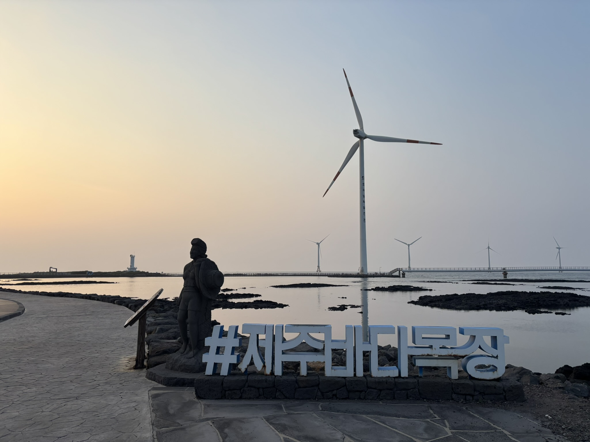
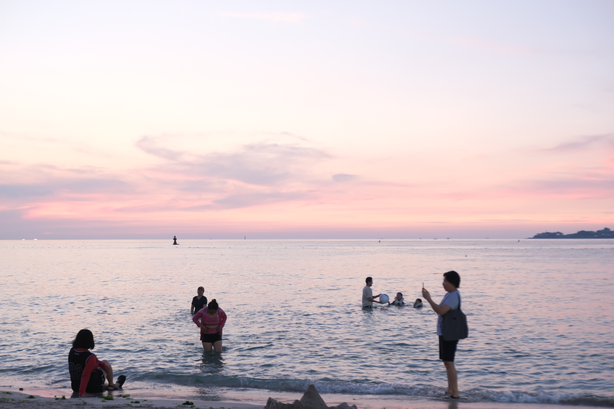
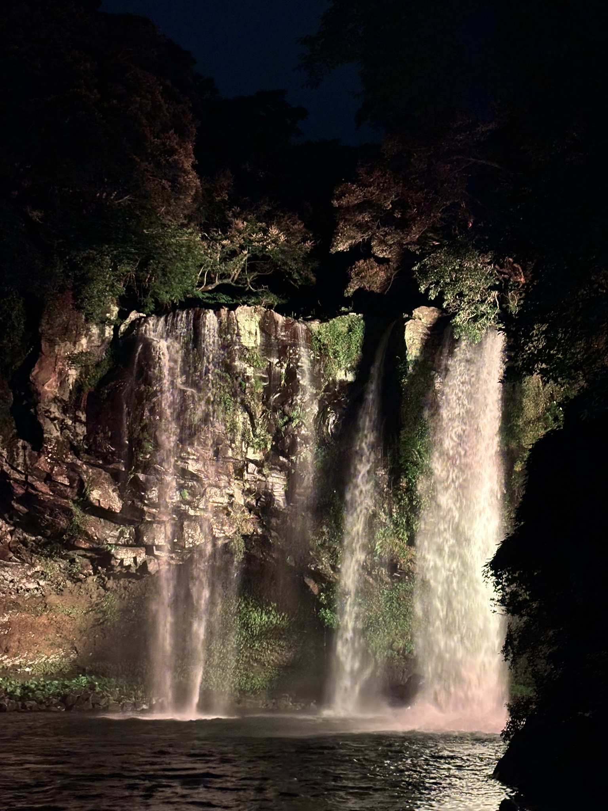

제주 대표 먹거리
제주 흑돼지
쫄깃한 식감과 풍부한 육즙이 특징인 제주도의 대표적인 음식입니다.
보말칼국수
제주 바다에서 나는 보말을 넣어 끓인 칼국수로, 진하고 고소한 국물 맛이 특징인 제주 향토 음식입니다.
ATTRACTIONS
제주의 아름다운 자연을 느낄 수 있는 대표 명소를 소개합니다.

푸른 제주 바다와 해안 풍력발전기가 어우러진 곳으로, 아름다운 해안 풍경을 감상하며 산책하거나 드라이브하기 좋은 코스입니다.

맑고 얕은 바다와 부드러운 모래사장이 어우러진 해수욕장으로, 비양도를 바라보며 아름다운 제주 바다를 감상할 수 있습니다.

울창한 숲과 시원한 폭포가 어우러진 서귀포의 대표적인 자연 관광지입니다.
JEJU FOOD
제주 여행에서 빼놓을 수 없는 대표 먹거리와 여행 팁을 소개합니다.
쫄깃한 식감과 풍부한 육즙이 특징인 제주도의 대표적인 음식입니다.
제주 바다에서 나는 보말을 넣어 끓인 칼국수로, 진하고 고소한 국물 맛이 특징인 제주 향토 음식입니다.
JEJU VIDEO
제주에서 촬영한 영상을 통해 아름다운 바다와 자연 풍경을 감상해 보세요.